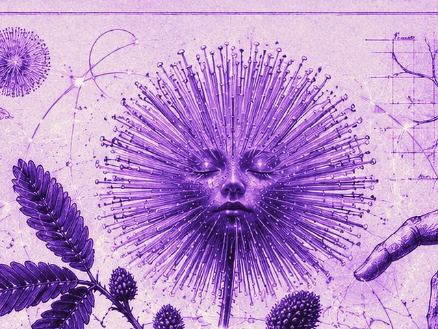
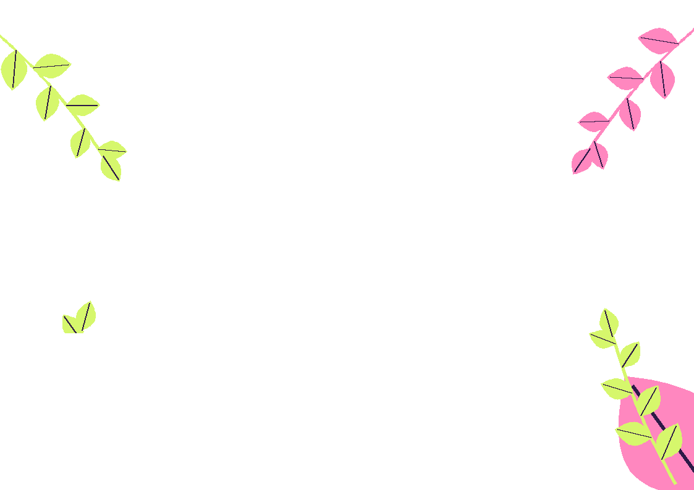
Verde Stellare · Argema
Due proposte per festival, associazioni ed eventi su natura, sostenibilità e benessere.
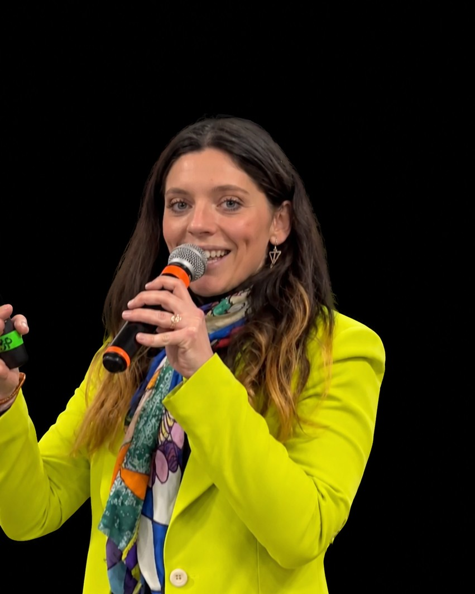
Ospite a
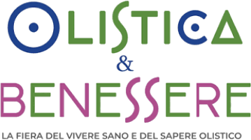
Proposta 01 · Lo spettacolo
Lo show comico e interattivo che trasforma il tuo evento: il pubblico ride, partecipa e se ne va con uno sguardo nuovo sulla natura. E su di sé.
Le piante abitano questo pianeta da più di 400 milioni di anni e hanno trovato soluzioni geniali per sopravvivere, adattarsi e cambiare. Sul palco le loro storie più incredibili, tutte vere e basate su studi scientifici, diventano lezioni di vita.
Storie vere così assurde che sembrano inventate.
Domande e sfide di curiosità coinvolgono la sala.
Ogni curiosità nasce da studi scientifici veri.
Ogni pianta lascia una lezione da portare a casa.
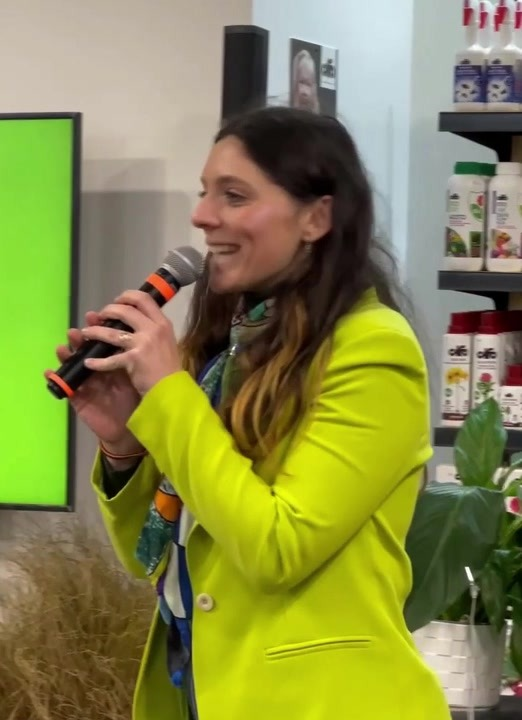
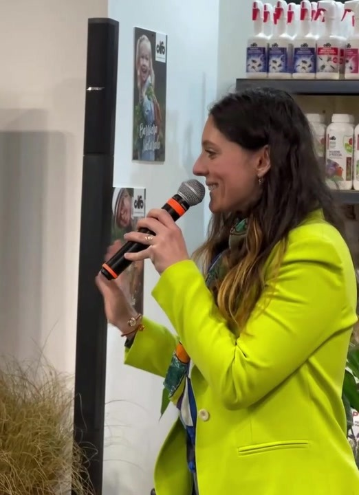
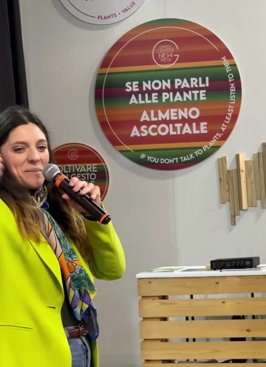
Proposta 01 · Lo spettacolo

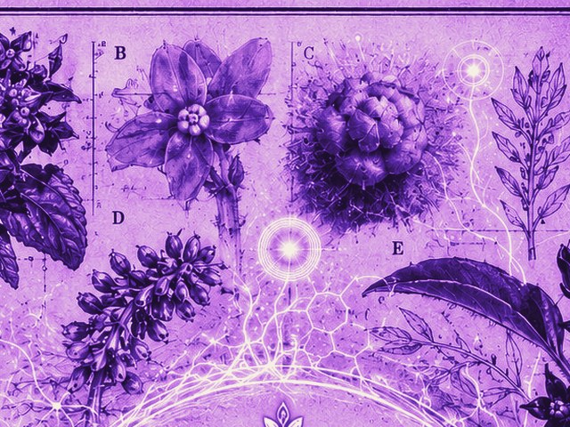
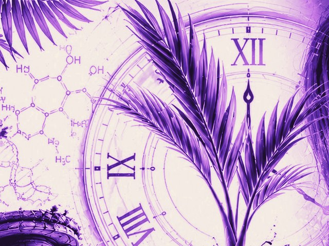
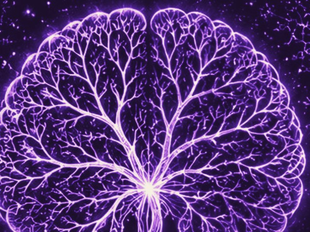
45 minuti
L’esperienza intera, per serate, rassegne, teatri e convegni.
15-20 minuti
Perfetto dentro festival, fiere e programmi con più ospiti.
Su misura
Sostenibilità, benessere, biodiversità, comunità.
Scheda tecnica
Serve solo un microfono (proiettore se disponibile). Teatri, palchi all’aperto, orti botanici, fiere, sale conferenze. Montaggio 20-30 minuti.
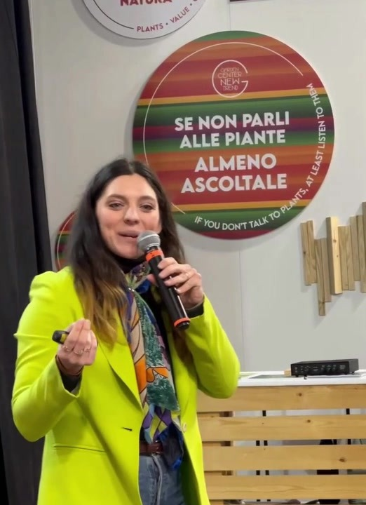
Proposta 02 · Il workshop
Workshop di comunicazione con il mondo vegetale
Un’ora dinamica, in movimento e all’aperto, per entrare in connessione con le piante: capire come comunicano, come possiamo ascoltarle e cosa possono insegnarci esseri che vivono con logiche completamente diverse dalle nostre.
Imparare a comunicare con le piante, con attenzione, sensi e presenza.
Scoprire come loro comunicano con noi e come possiamo imparare da loro.
Ricevere lezioni di vita per il presente da esseri con logiche diverse dalle nostre.
Vivere un’esperienza in movimento all’aperto, in connessione diretta con le piante.
Proposta 02 · Il workshop
Rallentare e prepararsi. Si entra nel tempo delle piante: respiro, sensi, attenzione.
Come si comunica con le piante e come loro comunicano con noi. Esercizi di comunicazione attraverso esperienze sensoriali guidate, in movimento tra le piante.
Lezioni per il presente. Cosa portiamo a casa da esseri con logiche diverse dalle nostre. Condivisione finale.
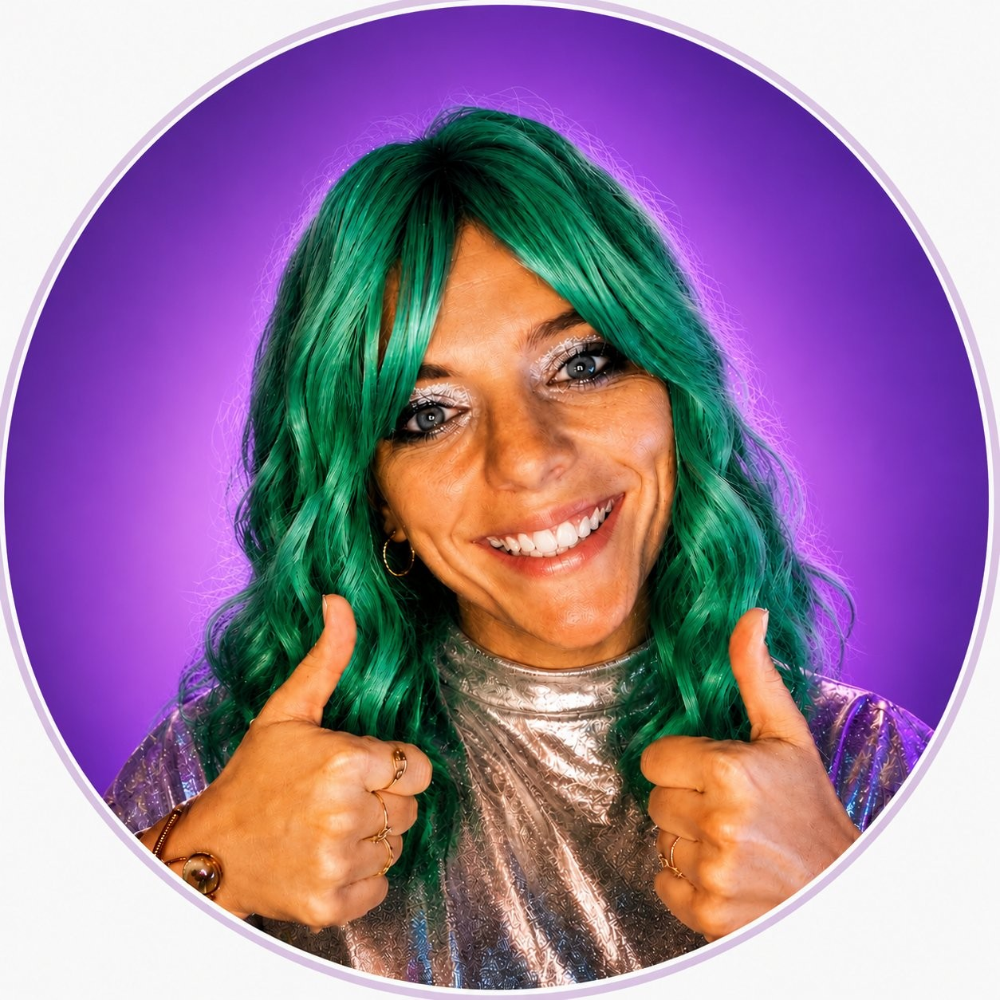
Scheda del workshop
Durata: 1 ora
Dove: all’aperto, parchi, giardini, orti botanici
Formato: dinamico, in movimento
Partecipanti: numero da concordare
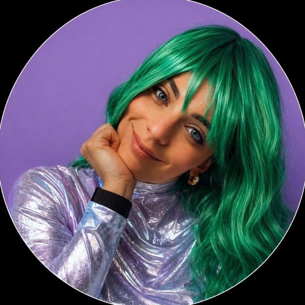
follower su Instagram
ospitate tra TV e fiere
Chi sono
Mi chiamo Argema, ho 29 anni e sono agronoma. Quattro anni fa ho stravolto la mia vita per cercare un senso più grande, andando a vivere in una comunità spirituale. Le piante mi hanno sostenuta e aiutata in questo cambiamento, diventando il mio modo di raccontare storie di crescita ed evoluzione interiore.
Faccio divulgazione scientifica sul mondo vegetale unendo studi scientifici, comicità e crescita personale: sui social come @argemacambiovita, dal vivo sul palco e nei workshop.
Ospite a
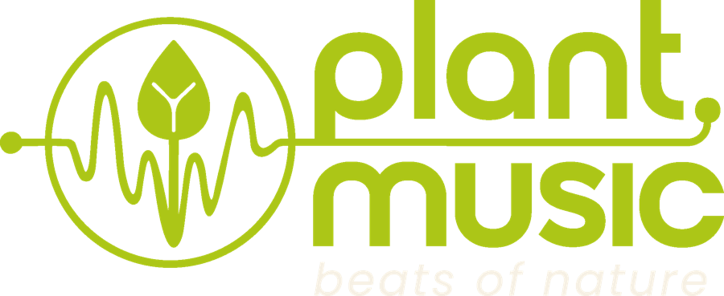
Plant Music Ambassador. Ambasciatrice ufficiale di Plant Music, la prima tecnologia nata in Italia per comunicare con le piante attraverso la loro musica.
Per il tuo evento
Le due proposte si possono abbinare nella stessa giornata: il workshop per vivere la connessione con le piante, lo spettacolo per ridere e scoprire insieme. Costruiamo il formato giusto per il tuo pubblico.
Vuoi sostenere il progetto? Annaffia il sogno su Ko-fi